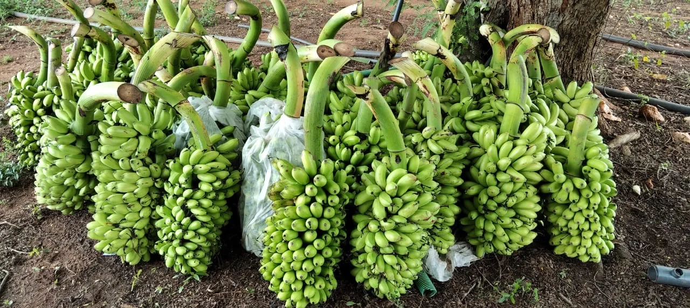
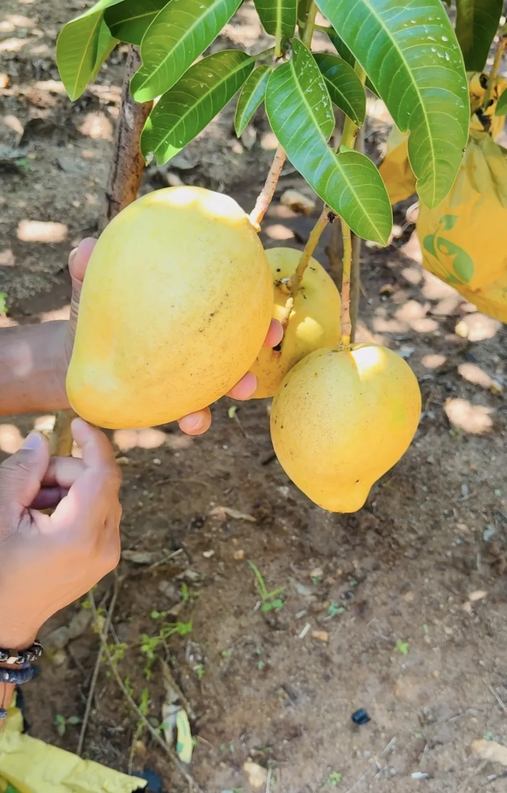
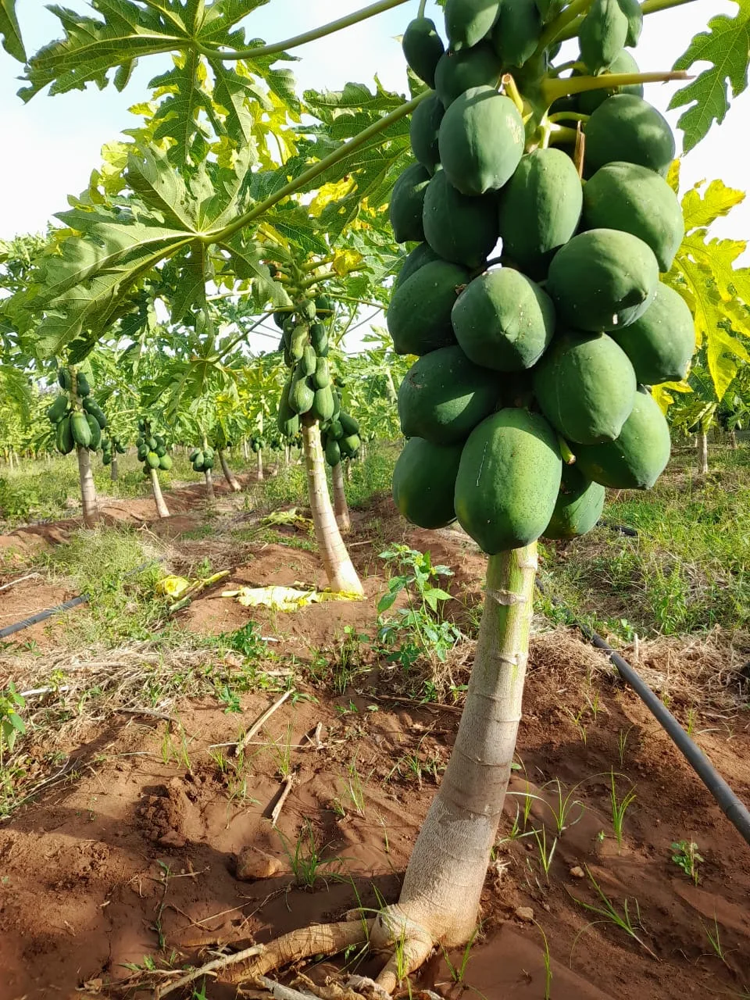

Banana
High demand in both local and export markets.
- Fresh from our plantation
- Carefully selected bunches
- Grown under monitored conditions


A diverse range of premium, naturally grown
fruits from our own plantations in Sri Lanka.
OUR RANGE
Nutritious, flavor-rich and responsibly cultivated fruits, grown with care across our 100+ acre farm.

High demand in both local and export markets.

Our signature and most demanded fruit.

A naturally grown Sri Lankan favourite with a unique flavour.

Quality papaya grown with care on our plantation.
Connect with our team to discuss availability, supply and collaboration opportunities.